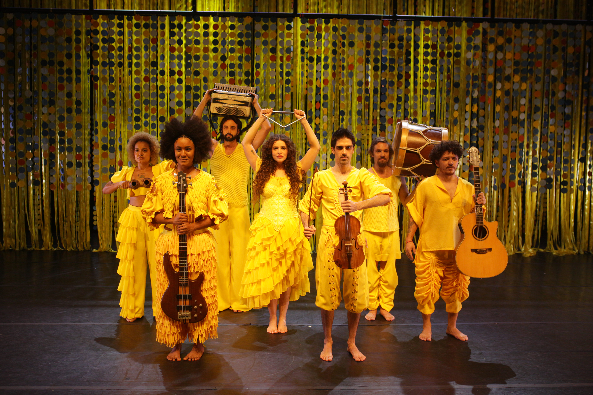
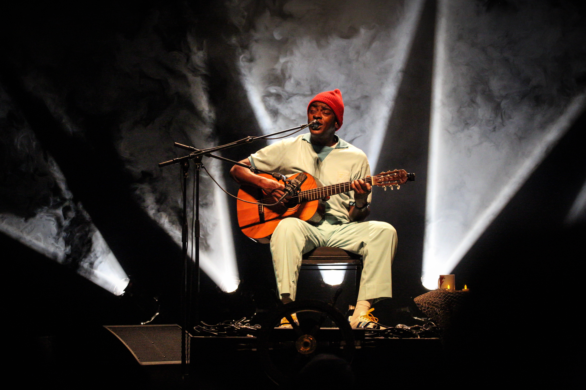

O que fazer no fim de semana no Rio de Janeiro (30/07 a 02/08)
A virada de julho para agosto arma um fim de semana de agenda rara no Rio de Janeiro. Entre quinta-feira, 30 de julho, e domingo, 2 de agosto, a cidade recebe a abertura da segunda edição do Festival de Teatro do Rio, vê o CCBB estrear a montagem que marca os cem anos da primeira companhia negra de teatro registrada no país, segue com o musical dos 80 anos de Alceu Valença na Praça Tiradentes e fecha o Festival de Inverno na Marina da Glória com Seu Jorge, Criolo e Belo na mesma noite.
Para cada dia, de quinta a domingo, a curadoria da Redação Foyer escolheu um programa na cidade do Rio de Janeiro, com serviço completo e link oficial de compra. Quem seguiu o roteiro do fim de semana anterior encontra agora outros palcos: três noites no Centro e uma despedida à beira da Baía de Guanabara.
Quinta 30/07: o Grupo Galpão encena Saramago no Teatro Riachuelo
A quinta-feira abre com uma das companhias mais respeitadas do teatro brasileiro. O Grupo Galpão, de Belo Horizonte, apresenta (Um) Ensaio sobre a Cegueira, inspirado no romance de José Saramago, Nobel de Literatura, sobre uma epidemia de cegueira que desmonta a vida de uma cidade e põe à prova a ética e a noção de coletivo. A direção e a dramaturgia são de Rodrigo Portella, e a montagem, estreada em 2025, recebeu o Prêmio APCA de Melhor Espetáculo. No elenco estão nomes históricos do grupo, caso de Eduardo Moreira e Inês Peixoto.
De 29 a 31 de julho, as três récitas cariocas abrem a segunda edição do Festival de Teatro do Rio, que segue até 16 de agosto com Marco Nanini, Lilia Cabral e Fábio Porchat na programação. Um detalhe para quem gosta de risco: em cada sessão, 14 espectadores maiores de 18 anos podem comprar o ingresso experiência e assistir à segunda metade da peça de dentro do palco, vendados, guiados pela voz do elenco.
Serviço. (Um) Ensaio sobre a Cegueira, com o Grupo Galpão, no Teatro Riachuelo (Rua do Passeio, 38, Centro). Quinta, 30 de julho, e sexta, 31 de julho, 20h, últimas apresentações. Ingressos de R$ 50 (balcão) a R$ 190 (plateia vip), à venda na Ingresso.com. Duração: 140 minutos. Classificação: 16 anos.
Sexta 31/07: a estreia que devolve ao palco o texto de 1926
Tudo Preto: uma re_vista chega ao Teatro I do CCBB cem anos depois de a Companhia Negra de Revistas, definida pelo CCBB como a primeira companhia negra de teatro registrada no país, apresentar o texto de De Chocolat no centro do Rio. A nova montagem tem idealização, direção e dramaturgia de Mauricio Lima e Tainah Longras, vencedores do Prêmio Shell 2026 de dramaturgia por VINTE!, e direção musical de Muato, premiado pelo mesmo espetáculo.
Em vez de repor a revista de 1926 como peça de museu, a dupla joga o material contra o presente, com seis atores em cena e uma trilha que mistura instrumentos acústicos e recursos eletrônicos, atravessando diferentes épocas da música brasileira. Com ingresso a R$ 30, é o programa mais acessível desta lista, e a temporada vai até 13 de setembro.

Serviço. Tudo Preto: uma re_vista, no CCBB Rio de Janeiro, Teatro I (Rua Primeiro de Março, 66, Centro). Estreia sexta, 31 de julho, 19h; sessões de quarta a sábado, 19h, e domingo, 18h. Temporada até 13 de setembro. Ingressos a R$ 30 (inteira) e R$ 15 (meia), no site Ingressos CCBB e na bilheteria. Classificação: 14 anos.
Sábado 01/08: o imaginário de Alceu Valença no Teatro Carlos Gomes
No sábado à tarde, o programa é Anunciação – O Musical de Alceu Valença, em cartaz no Teatro Carlos Gomes desde 23 de julho, quando abriu a temporada que marca os 80 anos do compositor pernambucano, noticiada pelo FOYER. Nada de biografia linear: o espetáculo parte da chamada mitologia valenciana, os personagens, paisagens e símbolos das canções de Alceu, e costura cerca de 35 músicas, de "Anunciação" a "La Belle de Jour" e "Tropicana".
A direção geral é de Miguel Colker, filho do fotógrafo Cafi, e a direção artística é de Duda Maia, de Elza e Jacksons do Pandeiro. O texto é de Luiza Loroza e Duda Rios.
"É uma relação muito forte de coletivo, um texto tradicional que, ao mesmo tempo, brinca de ser Alceu", disse Duda Maia ao Diário do Rio.

Serviço. Anunciação – O Musical de Alceu Valença, no Teatro Carlos Gomes (Praça Tiradentes, s/nº, Centro). Sábado, 1º de agosto, 17h; o musical também tem sessões de quinta e sexta às 19h e domingo às 17h. Temporada até 16 de agosto. Ingressos a partir de R$ 40, à venda na Sympla. Classificação: livre.
Domingo 02/08: Seu Jorge, Criolo e Belo fecham o Festival de Inverno
O domingo encerra a nona edição do Festival de Inverno Rio, que desde 24 de julho somou seis noites e mais de 30 atrações na Marina da Glória, com Ludmilla, Luísa Sonza e Marina Sena entre os destaques do segundo fim de semana. A última noite reúne três encontros: Seu Jorge recebe Marcelo D2, Criolo divide o palco com Rael e Belo canta com Gabi Melim.
Os portões abrem às 15h, com o pôr do sol sobre a baía no meio do caminho. Vale atenção ao bolso: as vendas chegaram ao quinto lote, e a meia solidária exige a doação de um agasalho ou cobertor em bom estado.

Serviço. Festival de Inverno Rio 2026, noite de encerramento com Seu Jorge + Marcelo D2, Criolo + Rael e Belo + Gabi Melim, na Marina da Glória (Av. Infante Dom Henrique, s/nº, Glória). Domingo, 2 de agosto, portões às 15h. Ingressos do 5º lote: Arena a R$ 440 (inteira) e R$ 220 (meia solidária, mediante doação de agasalho); Lounge a R$ 760 (inteira) e R$ 380 (meia), à venda na Bilheteria Digital. Classificação: 16 anos; menores de 16 só acompanhados dos responsáveis legais.
Com teatro de grupo, revista centenária, musical e festival ao ar livre, o roteiro atravessa a Rua do Passeio, a Rua Primeiro de Março, a Praça Tiradentes e a Marina da Glória. Antes de sair, vale confirmar horários e lotes nos canais oficiais de cada casa: no meio das férias, sessões extras e viradas de preço acontecem sem aviso.